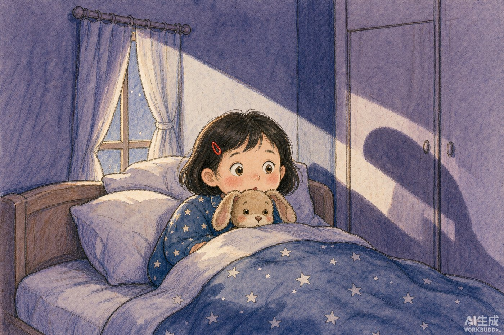

旁白晚上九点，妈妈关了灯，门轻轻合上。
旁白小满把自己缩成一个小球，只露出两只眼睛。
旁白衣柜的影子像一只蹲着的猫，窗帘被风吹得鼓起来，又瘪下去。
旁白她在心里数：一、二、三……
旁白数到七的时候，天花板上传来“咔哒”一声。
小满谁在那儿？
旁白没有人回答。可她知道，这个家里除了她和妈妈，阁楼上还堆着外公留下的旧东西。
旁白阁楼的楼梯在走廊尽头，第三级会响。
旁白小满踮着脚踩过去，还是“吱”了一声。
旁白灰尘在手电筒的光柱里慢慢地飘。
旁白角落里躺着一只旧纸灯笼，竹骨撑得鼓鼓的，米白色的宣纸上打着两处补丁。
旁白她伸手擦了擦，灯笼忽然“嗝”地响了一下。
阿灯哎哟，痒。
旁白一个细小的声音说。小满的手停在半空。灯笼里的火苗抖了抖，睁开了一只眼睛。
阿灯抓紧了！
旁白阿灯说。它没有翅膀，可它飘起来的时候，整间阁楼都亮了。
旁白窗户自己打开，风把小满的头发吹到脑后。他们从屋顶上飞过去，瓦片在脚下变成一片一片的鳞。
旁白整座城市正在关灯，一盏，两盏，三盏，像有人在数星星，只是数着数着就困了。
阿灯你看，黑不是空的，黑是盖着被子的。
旁白飞到第三条街的时候，路灯忽然灭了。
旁白不是一盏一盏地灭，是一整排一起灭，像有人一口把它们吸了进去。
旁白小满看见一团灰黑色的东西停在路灯上，拳头那么大，边缘毛茸茸的，正在“咕咚咕咚”地咽。
阿灯那是墨墨。它一晚上要吃掉一百盏灯。
旁白小满抱紧了阿灯，手指有点抖。
小满我们回去吧。
旁白小满说。她听见自己的声音在发抖，觉得有点丢人，又补了一句。
小满我不是怕。
旁白阿灯没有笑她。可它的光暗了一圈，像有人把灯芯拧小了一点。
小满你怎么了？
阿灯我没事。就是……你不相信我的时候，我会变小一点。
旁白它又打了个嗝，这次声音很轻。
旁白墨墨停在最后一盏路灯上，没有再吃。
旁白小满看见它的边缘在往下滴水，一滴，一滴，落在灯罩上。那不是雨。
小满你为什么哭？
旁白墨墨转过身，两只圆圆的白眼睛睁得很大。
墨墨我怕黑。
墨墨我住在天上，天上没有灯。
墨墨我吃掉它们，是想留一盏给自己。
墨墨可是我吞进去的光，过一会儿就凉了。
旁白小满摸了摸口袋。
旁白那里有一只小夜灯，是妈妈在她三岁那年买的，塑料的外壳，按一下会亮一朵小小的橘色的花。
旁白她把它掏出来，按了一下。花亮了。
小满给你。
旁白墨墨愣住了。
墨墨给我？那你不就没有了？
旁白小满想了想，说。
小满我明天再跟妈妈要一个。
旁白天快亮的时候，墨墨慢慢变软了。
旁白它不再是灰黑色，边缘泛出一点浅浅的金。它飘到天上，变成一朵很小的云，云里藏着一朵橘色的花。
旁白回家的路上，路灯一盏一盏地亮起来，像是有人在天亮之前，先替太阳点了一遍。
旁白阿灯的光变得很足，足得能照见小满的脚尖。
阿灯你不怕黑了？
旁白它问。小满摇头。
小满黑不是空的。黑是盖着被子的。